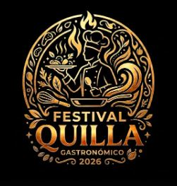

Chef Juan Pérez
Especialista en cocina tradicional colombiana.

Descubre los sabores del mundo en nuestro festival gastronómico anual. Disfruta de una variedad de platos deliciosos, música en vivo y actividades para toda la familia.
El Festival Gastronómico es un evento anual que celebra la diversidad culinaria de nuestra región. Durante varios días, chefs locales, emprendedores y cocineros tradicionales se reúnen para compartir sus mejores recetas y sabores. Encontrarás más de 50 expositores con platos típicos, postres artesanales, bebidas tradicionales y opciones para todos los gustos. Además, contamos con talleres de cocina, demostraciones en vivo y un escenario con música y entretenimiento para toda la familia. Este año el festival se realizará en Barranquilla, en la icónica Plaza de la Paz, un espacio emblemático de la ciudad que nos abrirá sus puertas para vivir juntos esta gran celebración culinaria. ¡Una experiencia única que no te puedes perder!
Especialista en cocina tradicional colombiana.
Reconocida por su innovadora cocina fusión.
Maestro de la parrilla y la cocina al aire libre.
Experta en postres y repostería artesanal.